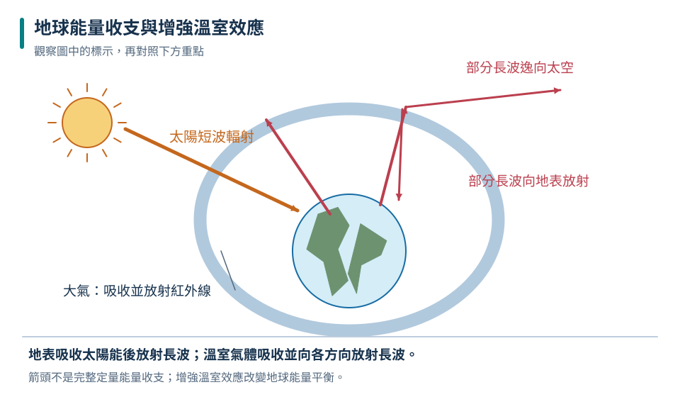
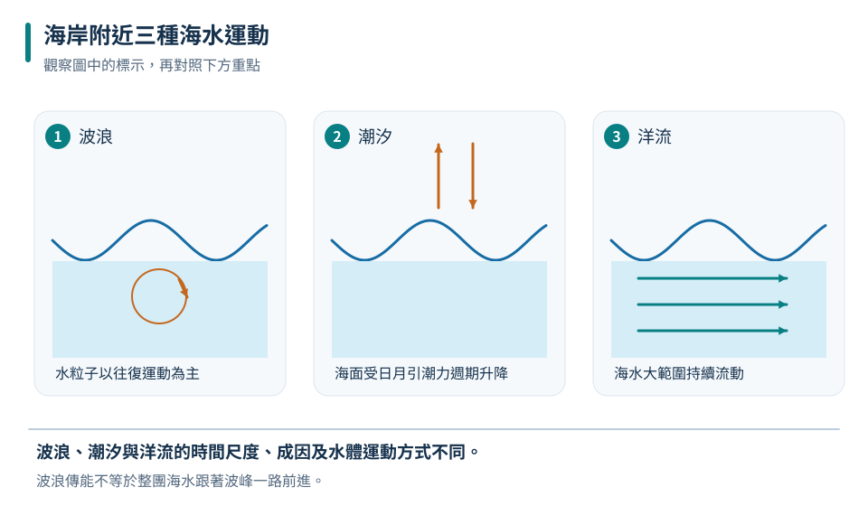
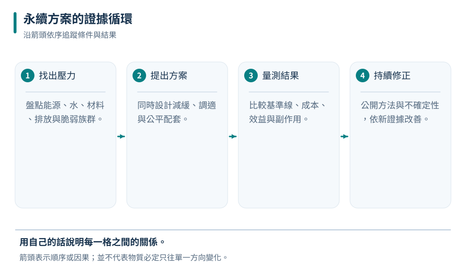

長期趨勢
用足夠長的多地點資料，看平均、變異與不確定性。
九下 · 地科 · 第 4 章
海洋把熱量與水分搬運到全球各地，也深深影響臺灣的生活。這章從天氣與氣候的尺度差異開始，理解溫室效應、海流、波浪、潮汐與海岸變化，再用證據和系統觀點評估節能、減碳、調適與永續選擇。
先備概念：能區分天氣與長期氣候、知道熱以傳導、對流與輻射傳遞、能讀取時間序列與百分比
LEARN & EXPLAIN
天氣描述較短時間、較小區域的大氣狀態；氣候是某地或全球長期的統計特徵，包含平均值、季節循環、變異與極端事件。單一寒流不能否定全球長期增暖，單一熱天也不能單獨證明氣候變遷。科學家結合地面站、海洋浮標、衛星、冰芯等多種資料，校正儀器與地點改變後再判讀趨勢。
地表吸收太陽短波輻射後，以紅外線向外放能。水氣、二氧化碳、甲烷等溫室氣體吸收並重新放射部分紅外線，使近地表比沒有這些氣體時溫暖，這是自然溫室效應。人類燃燒化石燃料、土地利用改變等增加溫室氣體，使能量收支出現額外擾動。臭氧層破洞和全球暖化是不同問題，不能混為同一機制。
用足夠長的多地點資料，看平均、變異與不確定性。
入射能量長期大於向外放出的能量，系統便會累積熱。
減緩降低原因與排放；調適降低已發生或預期衝擊。

能量仍會離開地球；當溫室氣體增加，系統在達到新的能量平衡前會累積能量。
不能用一次寒冬推翻30年趨勢；仍需檢查資料品質、範圍與不確定性。
全球暖化不表示每個地方、每一天都以同樣速率升溫；區域風、海流與自然變動會造成差異。
LEARN & EXPLAIN
表層海流主要受盛行風、地球自轉與大陸邊界引導，也會搬運熱量。深層環流和海水密度差有關，而密度受溫度、鹽度影響。海流不是整個海洋以同一速度同向前進；不同深度與區域可有不同流向。暖流、寒流是相對來源與周圍水溫的描述，不直接等同海水一定高於或低於某固定溫度。
波浪通常傳遞能量，水粒子多作往復或近似圓周運動，並非一個水團跟著波峰橫越整個海洋。潮汐主要源於月球與太陽對地球各處引力差以及地月系統運動；一天中的高潮低潮時刻會逐日改變。臺灣沿岸實際潮型、潮差還受海岸形狀與海底地形影響，不能只靠簡單月相判斷精確時刻。
持續的大尺度海水流動，可輸送熱、鹽與營養。
主要傳能；近岸變淺時波速、波長與浪形會改變。
海面有週期升降；大潮常在朔、望附近，小潮常在上、下弦附近。

三者可同時存在；圖中箭頭只說明概念，並非特定海域的即時方向。
波浪主要傳遞能量，不代表同一團水一路跟著波峰移動。
朔和望附近常出現大潮，表示潮差通常較大；「大潮」不是每次都代表巨大海嘯，也不保證當天一定淹水。
LEARN & EXPLAIN
永續發展要同時考慮環境承載、社會公平與經濟可行，並注意決策對不同時間與地區的影響。只把污染移到別處、只改善單一指標或只看短期成本，都可能造成新的問題。評估產品與能源可用生命週期觀點，從原料、製造、運輸、使用到回收處置，並清楚標示系統邊界與假設。
面對氣候風險，節約能源、提升效率、低排放能源與保護碳匯屬於減緩；防洪設計、耐旱作物、熱浪預警與避難規劃屬於調適。能源選擇還要比較穩定性、土地、生態、材料與廢棄物。個人行動有用，但公共基礎設施、制度與產業轉型也會決定可行選項。
說明時間、地點、受影響者與要改善的指標。
不能只計算使用階段，也要注意上游和末端。
設定可量測目標，追蹤副作用，依證據調整方案。

永續不是一次性的標語，而是有目標、資料、參與及修正的長期決策。
不一定；此簡化例甚至增加到104。要量實際功率與時間，避免反彈效應。
低碳不等於零影響；任何能源與材料都有生命週期代價，重點是依同一功能和一致邊界比較。
TRY, OBSERVE, EXPLAIN
REVIEW
用足夠長的多地點資料，看平均、變異與不確定性。
回到這一節複習持續的大尺度海水流動，可輸送熱、鹽與營養。
回到這一節複習說明時間、地點、受影響者與要改善的指標。
回到這一節複習CHAPTER TEST
先獨立作答，再看解析。中難與難為編者估計，尚未經學生實測校準。